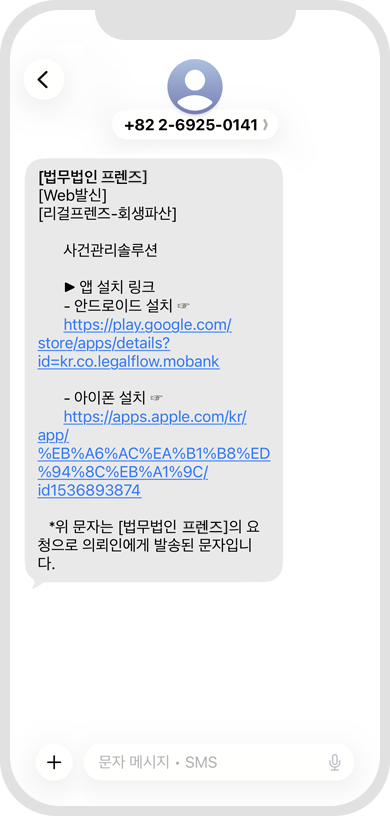
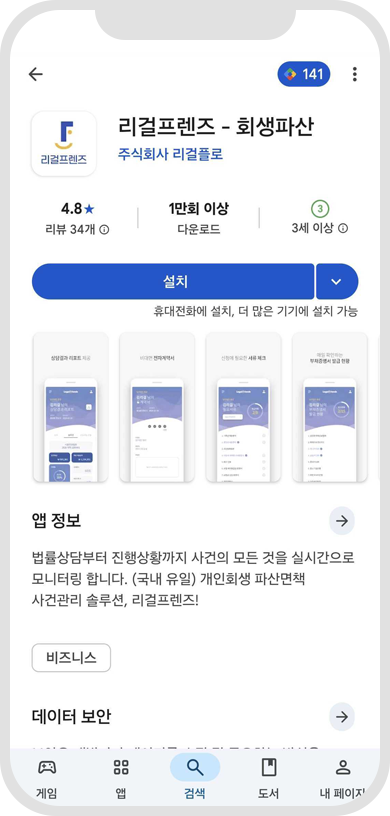
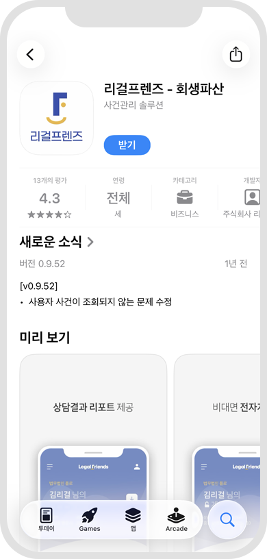

방법1
문자 링크를 통해 어플 다운로드

방법2
구글 PLAY 스토어 또는 앱스토어에서 "리걸프렌즈" 검색>다운로드


앱 설치 방법을 안내합니다.
문자 링크를 통해 어플 다운로드
구글 PLAY 스토어 또는 앱스토어에서 "리걸프렌즈" 검색>다운로드
앱 시작 방법을 안내합니다.
‘시작하기' 선택 후 나의 핸드폰 번호로 인증을 진행합니다.
앱 이용 방법을 안내합니다.
하단박스에서 최근 상담 로펌 또는 사무소에 대한 정보를 알 수 있습니다. 우측 상단 버튼을 눌러 마이페이지로 이동 가능합니다.
상담 또는 진행 중인 사건을 사무소별로 모두 확인할 수 있습니다. 동일한 사무소에서 여러 사건을 진행 중인 경우에도 사건번호별로 모두 확인 가능합니다. 등록된 사건을 누르면 진행중인 사건의 홈화면으로 이동합니다.
어플리케이션 알림 설정, 버전 업그레이드, 로그아웃, 회원탈퇴 기능이 있습니다.
마이페이지에서 진행중인 사건을 눌러 이동한 홈 화면입니다. 나의 사건 진행현황과 상세내역 확인이 가능합니다.
홈 화면에서는 진행중인 사무소, 현재 사건 단계, 나의 사건번호, 월 변제금, 총 변제금 등 확인 가능합니다.
우측 하단 전화 버튼을 눌러 해당 사무소의 후기작성과 전화연결을 할 수 있습니다.
좌측 상단 메뉴 버튼을 눌러 리포트부터 계약 진행, 신청서 확인 등 앱의 여러 기능을 이용할 수 있습니다.
진행 중인 사건이 여러 개인 경우, 사이드 메뉴 상단에 위치한 사건번호 박스를 누르면 진행 중인 사건번호가 모두 나열됩니다. 원하는 사건번호를 선택하면 해당 사건번호에 맞는 사건내용으로 변경되어 사건 확인이 가능합니다.
사무소에서 상담 받았던 내용을 확인하는 메뉴입니다. 담당자와 상담일자 등 확인 가능합니다.
요약, 솔루션 탭을 이동하여 내용을 확인할 수 있습니다.
A : 리포트를 PDF 파일로 다운로드 받을 수 있습니다.
사무소에서 작성한 계약서를 앱에서 확인하고 동의, 서명하여 계약을 체결할 수 있습니다.
사무소에서 작성한 계약서 내용을 확인한 후 확인하였다는 문구에 체크를 하여야 다음 절차로 넘어갈 수 있습니다.
위임인 정보, 수임료, 약관내용을 차례대로 확인하고 서명까지 진행합니다.
계약서 내용에 문제가 없음을 모두 확인했다면 서명 탭에서 하단 ‘위임인 서명박스’를 터치하고 서명을 진행해주세요.
서명 완료 후 아래 체크박스에 체크하고 계약체결을 확정합니다.
사건진행에 필요한 서류를 확인할 수 있는 메뉴입니다. 총 발급해야 하는 서류 개수와 발급된 현황도 확인 가능합니다.
서류목록을 확인하고 각 서류마다 붙어있는 우측 물음표버튼을 누르면 발급을 어디서, 어떻게 받아야 하는지 알 수 있습니다. 발급이 완료된 서류는 서류명 우측에 체크 아이콘이 붙습니다.
신청서류 중 ‘진술서'를 앱에서 작성할 수 있습니다. ‘진술서 작성' 버튼을 누르고 기본사항, 경력사항, 거주사항, 진술서를 차례대로 작성합니다.
A : 탭을 터치하여 자유롭게 이동하며 작성 가능합니다.
B : 작성이 완료되면 하단 ‘진술서 저장' 버튼을 꼭 눌러주세요. 누르지 않으면 저장이 되지 않습니다.
진술서 작성 중 ‘진술서 저장' 버튼을 누르지 않은 채 작성화면을 이탈하는 경우, ‘진술서 작성’ 버튼에 말풍선 모양이 보여집니다.
이 경우 진술서가 저장이 되지 않은 상태이니 다시 진술서 작성 화면으로 들어가 이어서 작성을 완료 한 후 꼭 진술서 저장을 눌러주세요.
발급해야 할 부채증명서 목록을 확인할 수 있는 메뉴입니다. 총 발급해야 하는 부채증명서 개수와 발급된 현황도 확인 가능합니다.
채권자목록이 맞는지 확인하고 발급 현황을 확인할 수 있습니다. 이자 3회 미납, 채권 매각, 채권 없음의 경우 각 채권자명 위에 색으로 표시됩니다. 발급이 완료된 부채증명서는 채권명 우측에 체크 아이콘이 붙습니다.
사무소에서 작성한 신청서 내용을 확인할 수 있는 메뉴입니다.
작성된 신청서 내용을 확인한 후 확인하였다는 문구에 체크를 하여야 다음 절차로 넘어갈 수 있습니다. 채권자목록, 재산목록, 수입상황, 변제금 내용을 최종적으로 잘 확인합니다.
신청서 내용을 모두 확인하였으면 해당 내용대로 신청서를 제출하는데 최종적으로 동의합니다. 동의를 하면 사무소에서 법원에 신청서를 제줄합니다.
법원에서 나온 보정권고에 따라 진행되는 보정현황을 확인할 수 있는 메뉴입니다. 보정서의 내용과 그 보정에 필요한 서류가 무엇인지 확인 가능합니다.
보정서 목록에서 확인할 보정서 항목을 선택하면 그 보정서에 해당되는 필요서류와 변동되는 채권자목록, 변제금을 확인할 수 있습니다.
작성된 보정서 내용을 확인한 후 확인하였다는 문구에 체크를 하여야 다음 절차로 넘어갈 수 있습니다.
A : 보정권고 종류, 송달일자, 제출기한, 제출여부를 확인합니다.
B : 보정에 필요한 서류목록을 확인하고 서류를 준비합니다. 우측 물음표를 누르면 발급매뉴얼을 확인할 수 있고, 발급이 완료된 서류는 서류명 우측에 체크 아이콘이 붙습니다.
보정서 내용을 모두 확인하였으면 해당 내용대로 보정서를 제출하는데 최종적으로 동의합니다. 동의를 하면 사무소에서 법원에 보정서를 제줄합니다.
별도의 나의 사건 검색없이 실시간으로 나의 사건 진행현황을 확인할 수 있는 메뉴입니다.
현재 접수된 나의 사건의 기본정보, 진행내용을 확인합니다.
A : 여러 사건이 있는 경우 눌러서 사건번호 별로 확인 가능합니다.
나의 수임료의 내역을 확인할 수 있는 메뉴입니다.
나의 총 수임료, 지금까지 납부한 수임료 내역, 남은 수임료 금액 등 모두 확인 가능합니다. 앞으로 언제, 얼마의 수임료를 납부해야 하는지 자세히 알 수 있습니다.
나의 사건에 관한 일정을 확인할 수 있는 메뉴입니다.
사건기일, 상담일정, 수임료 일정 등 나의 사건에 관한 모든 일정 확인이 가능합니다.
내가 사건을 진행하는 사무소의 정보를 확인할 수 있는 메뉴입니다.
사무소의 전문분야, 운영시간, 주소, 번호 등 모두 확인 가능합니다. 사무소의 사건진행 후기를 남길 수 있습니다.